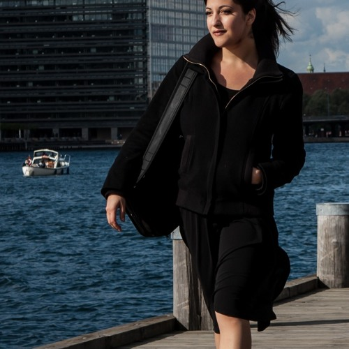
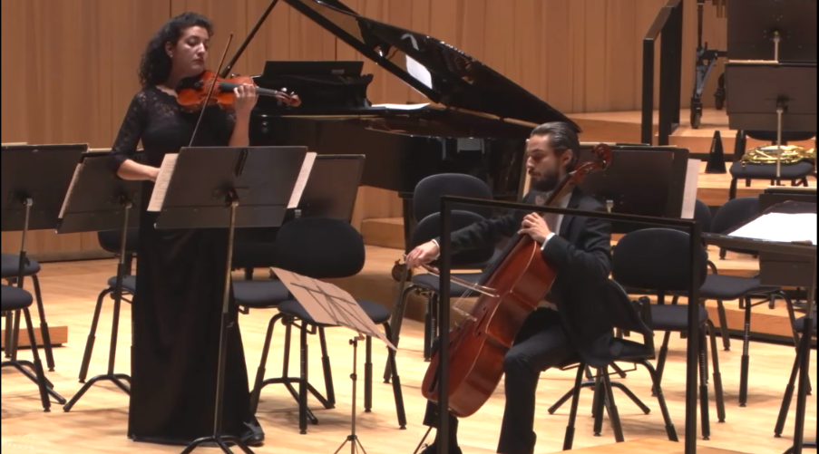
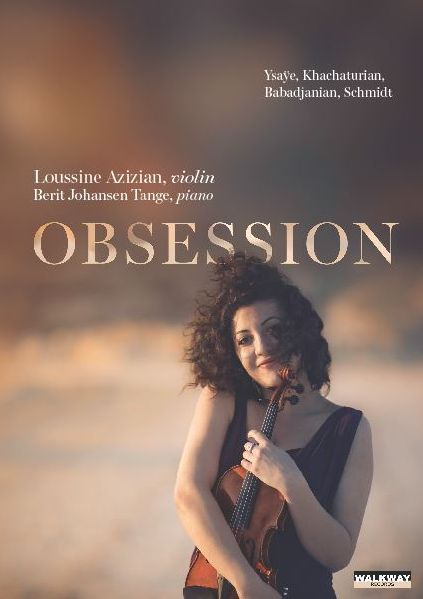
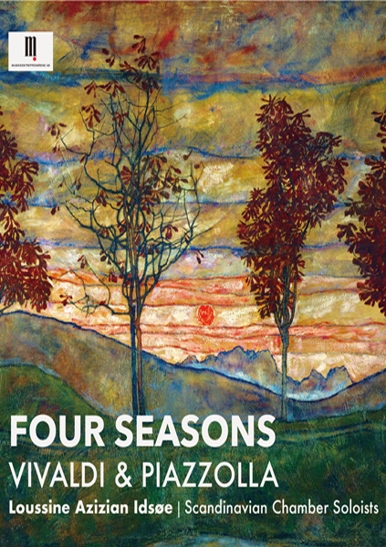

Acclaimed soloist and chamber musician, known for her rich sound, intensity and virtuosity.
Loussine has been featured on…

Armenian-born Danish violinist (b. 1986) is an acclaimed soloist and chamber musician, known for her rich sound, intensity and virtuosity. At the young age of 17 she had already won her first international competition — 1st prize at the prestigious Jeunesses Musicales competition in Bucharest, Romania.
Having studied in Copenhagen and Vienna, with professors Serguei Azizian (former professor at the Royal Danish Academy of Music, Copenhagen and concertmaster of Copenhagen Philharmonic) and Gerhard Schulz (professor at University of Music and Arts, Vienna and member of Alban Berg Quartet), Loussine has supplemented her education with lessons and masterclasses with some of the most prominent professors in the world, amongst others Schlomo Mintz, Antje Weithaas, Mihaela Martin, Christian Altenburger and Boris Kuschnir.
Known for mastering numerous different genres, Loussine’s repertoire is almost limitless and spans over 4 centuries — from the baroque geniuses J.S. Bach and G. Pergolesi to contemporary works, amongst others the extremely well-received “Pavane Extrapolations” composed and dedicated to her by the young award-winning composer Nicklas Schmidt.
Loussine’s debut album “Obsession” with the acclaimed Danish pianist, Berit Johansen Tange was released from Walkway Records in June 2015, including works by E. Ysaÿe, N. Schmidt, A. Babadjanian and A. Khachaturian, and received excellent reviews.
Being an active soloist and chamber musician, Loussine has performed in Denmark, Norway, Sweden, Germany, Switzerland, Austria, Armenia and China. Amongst her performances as soloist with orchestra are E. Korngold’s violin concerto with Aarhus Symphony Orchestra, G. Pergolesi’s violin concerto with Kristiansand Symphony Orchestra and F. Mendelssohn’s violin concerto with Neue Philharmonie Hamburg in the legendary Elbphilharmonie in Hamburg — resulting in two sold-out concerts in one day.
In 2019 Loussine founded a chamber ensemble in Norway — Scandinavian Chamber Soloists (originally called Kristiansand Sinfonietta). In less than a year the ensemble secured several sold-out concerts in Norway and Denmark and a contract with the Norwegian record label Musikkentreprenerne. The ensemble is now looking forward to the release of their debut record “The Four Seasons” by A. Vivaldi & A. Piazzolla, followed by numerous release tours to Norway, Sweden and Denmark.
Loussine Azizian is also a permanent member of the Kristiansand Symphony orchestra.

The discography of Lucy Azizian consists of two studio albums — debut solo record “Obsession” and “Four Seasons” as soloist with the Scandinavian Chamber Soloists Ensemble.

Eugene Ysaÿe, Aram Khachaturian, Arno Babadjanian, Nicklas Schmidt
Get the record now
Antonio Vivaldi - The four Seasons, Astor Piazolla - Las Estaciones Porteñas
Get the record nowDigital recordings are available on all major platforms - iTunes, Amazon etc.
Get the record nowYou can send a message to Lucy using the form.